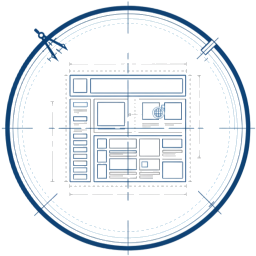

README.md..............template README.md for github
LICENCE, UNLICENCE.....various licenses for the code
index.html.............(for github) redirects to public/index.html
404.html...............(for github) redirects to public/error.html
aaa_notForProject/.....where non-essential files are kept
notes.txt.............notes on what I need to do with the project
public/................the web root or project documentation
index.html...........main app page
404.html.............on error show this page
assets/
fonts/
monaSans.css.....example variable font css file
monaSans.woff2...example variable font
images/
logo.png.........logo for the project
modules/
base.css...........sets css common for all pages
date/..............date tools
util/..............utility functions
src/...................when the code is not a web app it goes here
tools/.................development tools (lint, server, etc)
runServer.bat........windows bat command to run the local server
server...............simple node server for local testing (https)
extras/................extra templates
.gitignoreGlobal......example I use globally
404Generic.html......(for github) redirects to a global error page
READMEExamples.......example layouts for github README.md
READMEAccordian.md...example that opens and closes sections
READMECard.md......example that looks like a card
READMEGtCard.md....another exampleThat looks like a card
READMEHeader.md....a more usual github layout
vanillaJSModules/....vanilla javascript modules
anim/..............animation css
color/.............color tools and css
date/..............date tools
event/.............wrapper to dispatch and handle custom events
html/..............js to manipulate the DOM
util/..............utility functions
webPageExamples......example web page layouts
reset.css..........resets for a clean foundation
fullPage/..........example that uses the entire page
landingPage/.......example landing page
paperPage/.........example that looks like a paper page